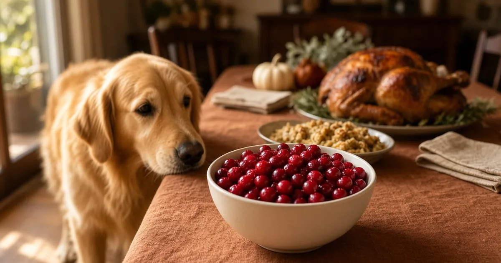

The berry itself is generally not toxic. The mix-ins are the problem.
Plain cranberries
- Fresh, cooked, or dried with nothing added
- Small amounts are generally OK
- Too many can upset the stomach
Risky mix-ins
- Raisins and grapes in trail mix, muffins, scones, and stuffing
- Xylitol in sugar-free sauces or juices
- Alcohol in cranberry cocktails and boozy desserts
- Grape juice blends
- Sugary or fatty sauces and desserts
This graphic summarizes the sources listed below. It does not rank amounts, and it is not a substitute for a call to your vet or a poison control line.
The real risks are the mix-ins
Before you share a cranberry dish, or if your pet already got into one, read the label or recipe. These are the add-ins that matter most:
- Raisins and grapes. Dried cranberries are sometimes mixed with raisins in trail mix, muffins, scones, and stuffing. Grapes and raisins can cause kidney failure in dogs, and no threshold amount has been established. Use the grapes and raisins calculator.
- Grape juice blends. Many cranberry juices are mixed with grape juice. Treat those like a grape exposure and call your vet or poison control.
- Xylitol. Sugar-free sauces, juices, and desserts may use xylitol (also listed as birch sugar). In dogs it can drop blood sugar quickly and, at higher amounts, damage the liver. Use the xylitol calculator.
- Alcohol. Cranberry cocktails, wine- or brandy-based sauces, and boozy desserts can make a pet wobbly and sick. Alcohol is absorbed quickly, so call if your pet got some.
- Sugar and fat. Jellied or homemade sauce, pies, and other desserts are often heavy in sugar and fat, which can upset the stomach and, in rich leftovers, raise the risk of pancreatitis.
Dogs and cats
The same basic rule applies to both. Pet Poison Helpline says cranberries, both raw and processed, are not a toxic concern for pets, as long as you check the label for harmful add-ins such as xylitol or grape ingredients. The AKC says the same for dogs: plain fresh or cooked cranberries are not inherently toxic, and too many can cause an upset stomach. Preventive Vet applies that small-amount, plain-berry guidance to dogs and cats.
If a cat eats a mixed dish with raisins, grape juice, xylitol, or alcohol, call your vet or a poison control line. Do not wait for signs. For grape or raisin exposures in cats, you can also use the cat grapes and raisins calculator.
The AKC also notes a veterinarian warning that large amounts of cranberries in dogs may contribute to calcium oxalate bladder stones. That is a reason to keep portions small and to ask your vet before using cranberry as a regular supplement, not a reason to skip a call after a mixed-dish raid.
Watch the Thanksgiving table
Cranberries show up everywhere this week: the sauce boat, stuffing with dried fruit, muffins and scones, relish trays, and leftover containers on low tables. Guests may also set down a cranberry cocktail. If your pet raids the table, do not guess which part of the plate they ate.
If more than one food was involved, use the Ate more than one thing? checker. Enter your pet's weight once and check each item, then call your vet or poison control and list everything.
Enter weight once, then check each item from the table or leftovers.
If your pet already ate some
- Move your pet away and pick up what is left, including sauce, baked goods, and packaging.
- Read the label or recipe for raisins, currants, grape juice, xylitol (birch sugar), and alcohol.
- Note your pet's weight, what was eaten, and when it happened.
- Call your veterinarian or an animal poison control center if any risky mix-in was involved, if a large amount was eaten, or if you are unsure. Do this even if your pet seems normal.
- Do not make your pet vomit unless a professional tells you to.
Both U.S. hotlines are open 24/7: ASPCA Animal Poison Control at (888) 426-4435 and Pet Poison Helpline at (855) 764-7661. A fee may apply. For numbers, fees, and what to have ready, see the pet poison control cost guide.
Frequently asked questions
Can dogs eat cranberries?
Plain cranberries, fresh, cooked, or dried with nothing added, are generally not toxic to dogs in small amounts. Too many can upset the stomach. The real risk is what they are mixed with, such as raisins, grape juice, xylitol, or alcohol.
Can cats eat cranberries?
The same rule applies to cats. Pet Poison Helpline says cranberries, both raw and processed, are not a toxic concern for pets, but you should check the label for xylitol or grape ingredients. Call your vet or poison control if your cat ate a mixed dish.
Can dogs eat cranberry sauce?
Check the recipe or label first. Cranberry sauce is high in sugar and can upset the stomach. Some recipes include raisins, currants, grape juice, xylitol, or alcohol, which can be dangerous. If any of those are in the sauce, call your vet or a poison control line.
Can dogs eat dried cranberries?
Dried cranberries with nothing added follow the same rule as fresh ones: generally not toxic in small amounts, and too many can upset the stomach. Do not share trail mix or baked goods that also contain raisins, chocolate, or macadamia nuts. Check sugar-free products for xylitol.
Can dogs drink cranberry juice?
Plain unsweetened cranberry juice is generally not toxic in small amounts, but many juice blends contain grape juice or a lot of sugar, and some sugar-free juices contain xylitol. Read the label. If the juice includes grape juice, xylitol, or alcohol, call your vet or poison control.
Do cranberries treat a UTI in dogs or cats?
There is not enough evidence to use cranberries in place of veterinary care. The AKC notes that studies in dogs have not confirmed a benefit, and a veterinarian should treat a suspected UTI. If your pet is straining to urinate or passing little or no urine, that is an emergency.
What should I do if my pet ate cranberries mixed with raisins?
Raisins and grapes can cause kidney failure in dogs, and no threshold amount has been established. Call your vet or a poison control line now, even if your pet seems normal. Use the grapes and raisins calculator, and if more than one food was eaten, use the multi-item checker.